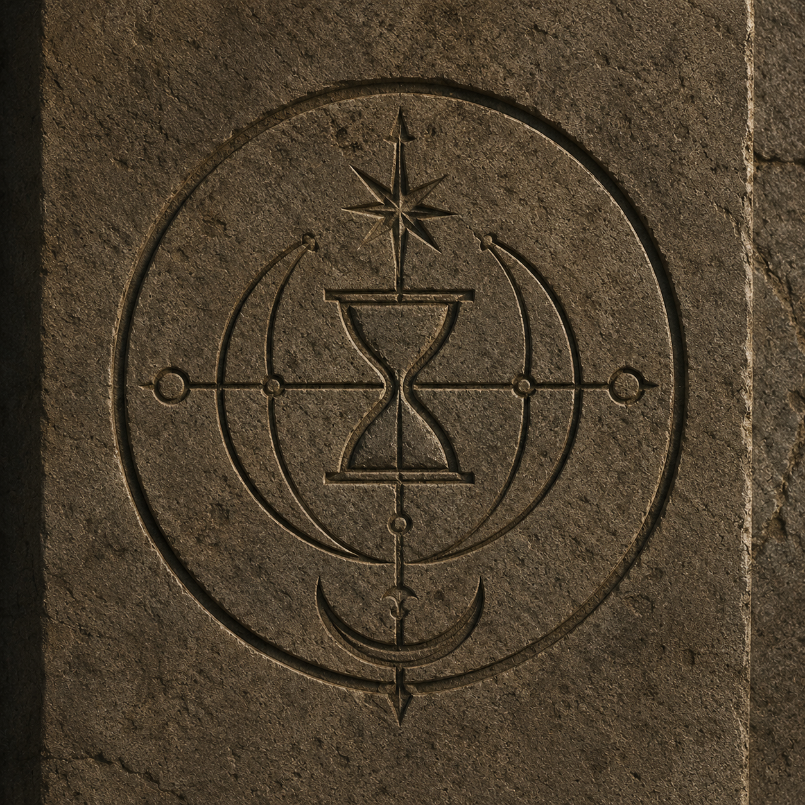

📖 Özet
AŞKIN Dedesini kaybettikten sonra Devin'in elinde geriye yalnızca eski bir cep saati kalır. İlk bakışta sıradan bir aile yadigârı gibi görünen bu saat, onun hayatını geri dönülmez biçimde değiştirecek bir sırrı saklamaktadır. Bir gün saatin akrep ve yelkovanını farkında olmadan farklı bir tarihe ayarlayan Devin, kendisini 23 Nisan 1924'te bulur. Cumhuriyet'in henüz yeni filizlendiği, umut ve mücadelenin iç içe geçtiği bu dönemde, geçmiş artık yalnızca tarih kitaplarında okunan bir kavram değildir; nefes alan, yaşayan bir gerçektir. Yabancısı olduğu bu zamanda dikkat çekmeden yaşamaya çalışan Devin, karşısına çıkan insanlar ve tanık olduğu olaylar sayesinde yalnızca tarihin akışına değil, kendi hayatına da farklı gözlerle bakmaya başlar. Ancak geçmişte atılacak her adımın geleceği değiştirme ihtimali vardır ve zaman, yapılan hiçbir hatayı kolay kolay affetmez. Kayıpların gölgesinde başlayan bu yolculuk; aile bağlarını, fedakârlığı, geçmiş ile gelecek arasındaki görünmez köprüleri ve insanın kendini bulma mücadelesini anlatan etkileyici bir hikâyeye dönüşür. AŞKIN, zamanı değiştirmeye çalışan bir gencin değil; zamanın değiştirdiği bir insanın hikâyesidir. Aşkın, zamanı aşan bir yolculuk hikâyesidir. Geçmiş ve gelecek arasında sıkışan karakterimiz, kaderleri değiştirmeye çalışırken büyük sırlarla yüzleşir. Ailesiyle, kendiyle, kokularıyla yeniden tanışırken, ihtimalleri görür ve birini seçmek zorunda kalır. Ama kim her şeyi seçmek varken tek bir şeyle yetinir?

📚 Tür
Fantastik / Romantik / Bilimkurgu
✨ Yazar Notu
Aşkın kelimesi kitabımızda bir duygu olan aşktan ziyade eski anlamıyla kullanılmıştır. Yani aşan, aşmış olan anlamındadır. Sadece bir aşk romanı bekleyenleri hayal kırıklığına uğratmak istemem. Ancak romanımız aşk kadar zamanı ve zamanda yolculuğun bir yandan açarken başka bir yandan kapattığı kapılara odaklanmaktadır. Yeni bölümler, her hafta Wattpad üzerinden yayınlanacaktır(şimdilik).